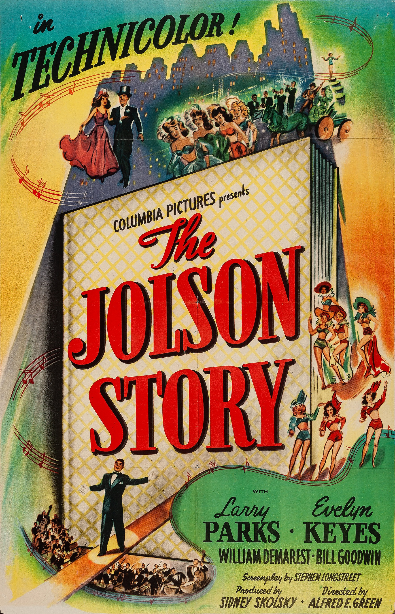

The Jolson Story
19th Academy Awards
(Oscars 1947)
6 Nominations, 2 Awards
| Nominations | ||
|---|---|---|
| Category | Nominees | Result |
| Actor | Larry Parks | Nominated |
| Actor in a Supporting Role | William Demarest | Nominated |
| Cinematography (Color) | Joseph Walker | Nominated |
| Film Editing | William Lyon | Nominated |
| Sound Recording | John Livadary | Won |
| Music (Scoring of a Musical Picture) | Morris Stoloff | Won |